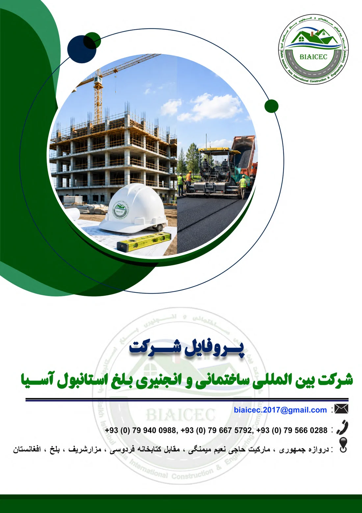

ساخت و بازسازی سرکها
اجرای سرکهای آسفالتی و کانکریتی، زیرسازی، بیسکورس، کمپکشن و علایم ترافیکی.
جزئیات خدمات →شرکت بینالمللی ساختمانی و انجنیری بلخ استانبول آسیا از سال ۲۰۰۸ در پروژههای سرک، ساختمان، پل، آبرو، کانال و زیربناهای شهری افغانستان فعالیت دارد.

ظرفیت اجرایی شرکت، مجموعهای از نیروی انجنیری، مدیریت ساحه، ماشینآلات و تجربه پروژههای زیربنایی را در یک تیم واحد گردهم میآورد.
اجرای سرکهای آسفالتی و کانکریتی، زیرسازی، بیسکورس، کمپکشن و علایم ترافیکی.
جزئیات خدمات →ساخت ساختمانهای عمومی و خصوصی از مرحله خاکبرداری تا تکمیل و تحویل.
جزئیات خدمات →ساخت پلها، پلچکها، آبروها و سازههای عبوری با کنترل کیفیت انجنیری.
جزئیات خدمات →کانالهای آبیاری، زهکشی، آبرسانی و حفاظت مسیرهای آب.
جزئیات خدمات →خاکبرداری، تسطیح، حمل مواد، کمپکشن و پشتیبانی پروژه با ماشینآلات سنگین.
جزئیات خدمات →برنامهریزی، نظارت، کنترل کیفیت، مدیریت ساحه و تحویل پروژه.
جزئیات خدمات →

بر اساس پروفایل رسمی شرکت، بلخ استانبول آسیا یک شرکت خصوصی، غیرسیاسی و غیردولتی است که با هدف سهمگیری در ساختوساز و بازسازی افغانستان تأسیس شده است.
 پروژه اجراشده
پروژه اجراشدهنمونهای از پروژههای ثبتشده در پروفایل رسمی شرکت.
 پروژه اجراشده
پروژه اجراشدهنمونهای از پروژههای ثبتشده در پروفایل رسمی شرکت.
 پروژه اجراشده
پروژه اجراشدهنمونهای از پروژههای ثبتشده در پروفایل رسمی شرکت.
پروژه اجراشدهنمونهای از پروژههای ثبتشده در پروفایل رسمی شرکت.
 پروژه اجراشده
پروژه اجراشدهنمونهای از پروژههای ثبتشده در پروفایل رسمی شرکت.
پروژه اجراشدهنمونهای از پروژههای ثبتشده در پروفایل رسمی شرکت.
پروفایل ۳۳ صفحهای شرکت شامل معرفی، اهداف، جواز، کارمندان، ماشینآلات، فهرست تجربههای کاری و تصاویر پروژههای اجراشده است.
باز کردن پروفایل PDF
برای درخواست قیمت، همکاری، اسناد شرکت یا معلومات بیشتر با ما تماس بگیرید.